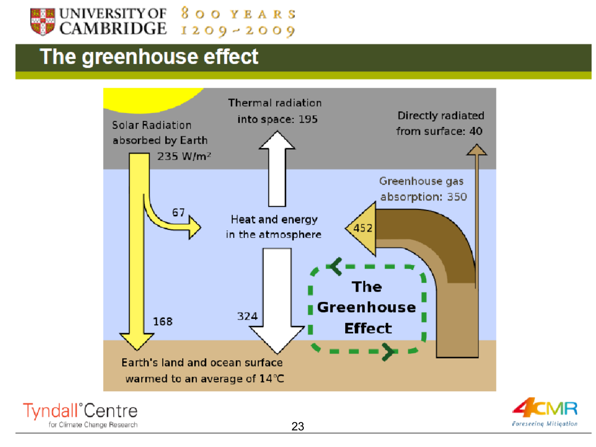
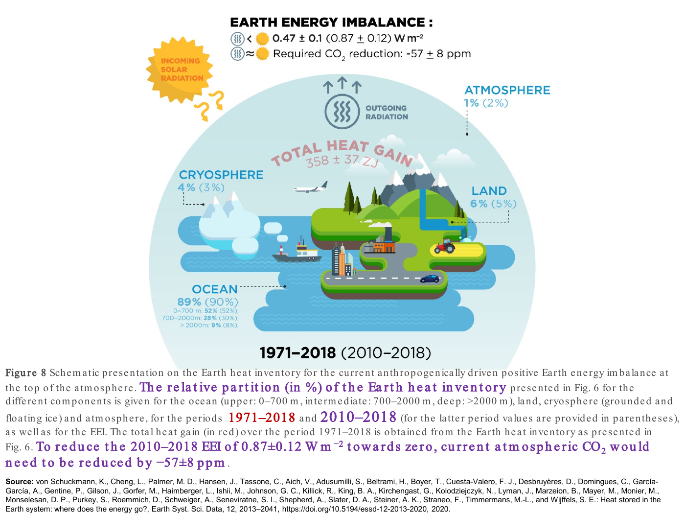

Explain radiative balance, heat storage and ocean chemistry
Useful first: Classify the four environmental functions, Trace material, waste and utility paths
Lesson outline
- 02IntroductionSee the main question, learning objectives and prerequisites.
- 03Key definitions and conceptsGet familiar with the important terms and notation.
- 04Greenhouse effect, CO2 and Earth's energyWhy does increasing atmospheric greenhouse-gas abundance alter climate, and where does the extra energy go?
- 05The radiative mechanism and its limits as an analogyThe Czech schematic on p. 22 shows incoming sunlight, some reflection by Earth's surface/atmosphere, absorption at the surface and outgoing longwave heat radiation.
- 06Energy imbalance and the heat inventoryIncoming energy minus outgoing radiation is the net energy flux.
- 07CO2 also changes ocean chemistrythe stated quantities dissolving into seawater changes carbonate chemistry and lowers pH. reports surface-ocean pH falling from the stated quantities to the stated quantities since…
- 08Greenhouse effect, CO2 and Earth's energyWhy does increasing atmospheric greenhouse-gas abundance alter climate, and where does the extra energy go?
- 09Worked exampleFollow a complete application of the reasoning.
- 10Practise the reasoningWork through written tasks, with optional support and solutions.
- 11Check your reasoning: an offline quizCheck your choices and see feedback without a connection.
- 12Check your understandingReview the key distinctions and check what you can explain.
- 13Test yourself laterTry another prepared question before rereading.
- 14SourcesFind the materials and limits behind the lesson.
Introduction
In this lesson, explain radiative balance, heat storage and ocean chemistry.
2.1 What you’ll learn
- Explain infrared absorption/emission and external energy balance
- Calculate a declared illustrative heat partition and preserve period/coverage/conditionality and ocean-chemistry distinctions.
2.2 Before you begin
Check the foundations
Which environmental function includes climate support, and why can the wider environmental system change wellbeing beyond the firms/households consumption loop?
Reveal foundation explanation
Climate belongs to global biospheric life-supporting services; resources/amenities/waste feedbacks affect wellbeing beyond consumption. Require the correct function and at least one explicit physical/utility path;
Key definitions and concepts
- Radiative imbalance: Absorbed incoming energy minus outgoing energy at the external boundary.
- Heat inventory: Accumulated energy across ocean, land, ice and atmosphere over a stated period.
- Ocean acidification: A decline in seawater pH, which can occur while pH remains above7.
Greenhouse effect, CO2 and Earth's energy
Why does increasing atmospheric greenhouse-gas abundance alter climate, and where does the extra energy go? The lecture links radiation, concentrations and Earth's heat inventory. A temperature change is one consequence of an energy imbalance; ocean heating and ice change are also part of that response.

This source-derived map follows and distinguishes a radiative mechanism, its evidence and a separate chemical effect of CO2.
The radiative mechanism and its limits as an analogy
The Czech schematic on p. 22 shows incoming sunlight, some reflection by Earth's surface/atmosphere, absorption at the surface and outgoing longwave heat radiation. Greenhouse gases/clouds absorb and emit part of that infrared radiation, including downward emission.
“Sluneční záření” is solar radiation, “Země” Earth and “atmosféra” atmosphere. The source's text describes this as absorption and “reflection” by greenhouse-gas molecules;
the physical mechanism is absorption and re-emission, not a literal infrared mirror. The embedded comment likewise contrasts reflected sunlight and thermal radiation.
The p. 23 historical teaching diagram gives absorbed sunlight \(235\,\mathrm{W}/\mathrm{m}^{2}\), split into \(67\) atmospheric and \(168\) surface absorption. Thermal loss to space is \(195+40=235\,\mathrm{W}/\mathrm{m}^{2}\);
its larger internal downward/upward flows (including \(324\) downward and \(350\) absorbed greenhouse radiation) do not create energy but redistribute it within the surface–atmosphere system. These are the figure's illustrative older-budget values, not a current measurement of every energy flux.

Natural greenhouse warming makes the surface warmer than it would be without this radiative effect. Change in greenhouse-gas abundance enhances that natural effect and changes the balance; a natural greenhouse effect by itself is not synonymous with ongoing human-caused climate change.
CO2 is a central long-lived greenhouse gas, not the only one: methane, nitrous oxide and halogenated gases also matter. The source's description of CO2 as “most important” is read in its long-lived anthropogenic context rather than ignoring water-vapour/cloud feedback.
The lecture says CO2 supplied about two-thirds of the total human-produced greenhouse-gas heating influence in 2021. Keep its year and denominator;
a share of total forcing and a share of the increase since 1990 are different statistics. Its list includes “black carbon” among gases on pp. 25/48;
that is a category error. Black carbon is an aerosol/soot component, not a greenhouse gas.
The European Commission JRC glossary explicitly defines it as an aerosol species: consulted definition.
Energy imbalance and the heat inventory
Incoming energy minus outgoing radiation is the net energy flux. A positive imbalance means energy accumulates in Earth's system.
The source's von Schuckmann et al. 2020 figure estimates \(358\pm37\ \mathrm{ZJ}\) total heat gain over 1971–2018 (\(1\,\mathrm{ZJ}=10^{21}\text{ joules}\)), equivalent to mean \(0.47\pm0.10\ \mathrm{W}/\mathrm{m}^{2}\). Its 2010–2018 estimate is \(0.87\pm0.12\ \mathrm{W}/\mathrm{m}^{2}\).
These different periods must remain attached to the values.
For 1971–2018, the diagram partitions heat uptake into ocean 89%, land 6%, cryosphere 4% and atmosphere 1%. Parentheses give 2010–2018 values 90%, 5%, 3%, 2%.
Ocean layers account for 52% upper 0–700 m, 28% at 700–2000 m and 9% below 2000 m in the longer period, versus 52/30/8% in the later period. The ocean dominates: surface-air temperature alone does not measure all the accumulated energy. Reference verification: the cited original's §6 and Figure 8/caption reproduce the periods/partition and clarify the conditional calculation: von Schuckmann et al.2020.

The figure's “\((-57\pm8)\ \mathrm{ppm}\)” is the paper's modeled CO2 reduction from an approximately 410 ppm reference needed to counter its estimated 2010–2018 imbalance under its radiative assumptions. It is neither an observed concentration decline nor an unconditional present-day policy target. The paper also notes other greenhouse-gas changes affect that calculation.
shows ocean-heat-content anomalies relative to 2005–2017 for 0–300, 0–700, 0–2000 and 700–2000 m layers, with ensemble 2σ shading. Some depth bands overlap, so adding all curves would double count heat.
The caption specifies the ocean area 60°S–60°N and bathymetry restrictions for the contributing products; do not generalize its per-area axis into an unqualified global total.
Rising curves and uncertainty bands support ocean warming within that study coverage.
CO2 also changes ocean chemistry
\(\mathrm{CO}_2\) dissolving into seawater changes carbonate chemistry and lowers pH. reports surface-ocean pH falling from \(8.21\) to \(8.10\) since industrialization and contrasts an intact shell with one exposed to more corrosive conditions. “Acidification” means decreasing pH;
it does not mean the average seawater has already become acidic in the everyday \(\mathrm{pH}<7\) sense. The shell comparison illustrates a biological consequence but supplies no full experiment protocol for estimating an effect size.
This chemical pathway is distinct from the radiative-heating pathway even though both start with increased \(\mathrm{CO}_2\).
The core foundations are radiation/energy conservation, concentration-versus-emission units and period/reference baselines, because those distinctions keep every graph interpretable. Historical temperatures and the shell image support these mechanisms without becoming current datasets or independent causal estimates.
Greenhouse effect, CO2 and Earth's energy
Read the full checked source context
Why does increasing atmospheric greenhouse-gas abundance alter climate, and where does the extra energy go? The lecture links radiation, concentrations and Earth's heat inventory. A temperature change is one consequence of an energy imbalance; ocean heating and ice change are also part of that response.
This source-derived map follows and distinguishes a radiative mechanism, its evidence and a separate chemical effect of CO2.
The radiative mechanism and its limits as an analogy
The Czech schematic on p. 22 shows incoming sunlight, some reflection by Earth's surface/atmosphere, absorption at the surface and outgoing longwave heat radiation. Greenhouse gases/clouds absorb and emit part of that infrared radiation, including downward emission.
“Sluneční záření” is solar radiation, “Země” Earth and “atmosféra” atmosphere. The source's text describes this as absorption and “reflection” by greenhouse-gas molecules;
the physical mechanism is absorption and re-emission, not a literal infrared mirror. The embedded comment likewise contrasts reflected sunlight and thermal radiation.
The p. 23 historical teaching diagram gives absorbed sunlight \(235\,\mathrm{W}/\mathrm{m}^{2}\), split into \(67\) atmospheric and \(168\) surface absorption. Thermal loss to space is \(195+40=235\,\mathrm{W}/\mathrm{m}^{2}\);
its larger internal downward/upward flows (including \(324\) downward and \(350\) absorbed greenhouse radiation) do not create energy but redistribute it within the surface–atmosphere system. These are the figure's illustrative older-budget values, not a current measurement of every energy flux.
Natural greenhouse warming makes the surface warmer than it would be without this radiative effect. Change in greenhouse-gas abundance enhances that natural effect and changes the balance; a natural greenhouse effect by itself is not synonymous with ongoing human-caused climate change.
CO2 is a central long-lived greenhouse gas, not the only one: methane, nitrous oxide and halogenated gases also matter. The source's description of CO2 as “most important” is read in its long-lived anthropogenic context rather than ignoring water-vapour/cloud feedback.
The lecture says CO2 supplied about two-thirds of the total human-produced greenhouse-gas heating influence in 2021. Keep its year and denominator;
a share of total forcing and a share of the increase since 1990 are different statistics. Its list includes “black carbon” among gases on pp. 25/48;
that is a category error. Black carbon is an aerosol/soot component, not a greenhouse gas.
The European Commission JRC glossary explicitly defines it as an aerosol species: consulted definition.
Concentration is not a global daily average by default
A concentration in ppm measures a fraction of atmospheric molecules; Mauna Loa is a particular station, a daily/monthly average is not an annual average, and a global marine-surface estimate is not a station reading. The seasonal cycle on the Mauna Loa graphs reflects Northern Hemisphere vegetation uptake/decay over the year, superimposed on a long-term human-driven rise.
The source reports global \(419.3\ \mathrm{ppm}\) in 2023, global \(422.7\ \mathrm{ppm}\) in 2024, and a Mauna Loa daily \(425.68\ \mathrm{ppm}\) on 1 November 2025; the last is a source-reported dated station value, not independently reconstructed daily data.
Its 2024 “increase over 2023” \(3.75\ \mathrm{ppm}\) is not the arithmetic difference of the displayed annual means (\(422.7-419.3=3.4\)). These statements mix vintages and annual-average versus within-year growth conventions. Reference check: NOAA's archived 21 May 2025 article reports global 2024 annual \(422.8\ \mathrm{ppm}\), within-2024 increase \(3.75\ \mathrm{ppm}\) and Mauna Loa annual \(424.61\ \mathrm{ppm}\).
This explains why year/series/averaging definition must accompany a number; the source \(422.7\) differs from that reference and from its own p. 30 figure \(422.8\). NOAA, “Carbon dioxide levels in 2024”.
These are documented historical comparisons, not live 2026 concentrations.
compares an 800,000-year ice-core record (below about 300 ppm in that displayed record) with a modern dot. Its graphic labels 2024 average 422.8 ppm, while the caption still says 2022.
The observed lesson is the large, rapid recent rise relative to those glacial/interglacial variations; the inconsistent caption year is retained explicitly rather than relabeling the figure silently.
The source attributes the underlying reconstruction to Lüthi et al. 2008/NOAA NCEI.
Reading the temperature evidence
is a deep-time reconstructed-temperature composite with nonuniform time scales: millions, then thousands of years, with geological periods and human-evolution labels. It illustrates long-run climate variation;
straight visual slopes across scale changes do not measure comparable rates. 's heading mentions a “hockey stick dispute,” but its actual graph compares several historical temperature series over roughly 1840–2000. It is not, by itself, a millennium reconstruction or a resolution of every attribution dispute.
is explicitly a one-day average 2 m temperature field for 25 February 2018 from GFS/ClimateReanalyzer. It shows spatial weather variation, not a global multi-decade trend or an anomaly with a stated climatology. instead gives a global land/sea temperature anomaly relative to 1961–1990, with an 1850–2023 plotted record and grey 95% confidence bounds.
An anomaly is a difference from that reference mean, not the absolute surface temperature. It cannot be directly equated with a warming target relative to a different preindustrial baseline.
Energy imbalance and the heat inventory
Incoming energy minus outgoing radiation is the net energy flux. A positive imbalance means energy accumulates in Earth's system.
The source's von Schuckmann et al. 2020 figure estimates \(358\pm37\ \mathrm{ZJ}\) total heat gain over 1971–2018 (\(1\,\mathrm{ZJ}=10^{21}\text{ joules}\)), equivalent to mean \(0.47\pm0.10\ \mathrm{W}/\mathrm{m}^{2}\). Its 2010–2018 estimate is \(0.87\pm0.12\ \mathrm{W}/\mathrm{m}^{2}\).
These different periods must remain attached to the values.
For 1971–2018, the diagram partitions heat uptake into ocean 89%, land 6%, cryosphere 4% and atmosphere 1%. Parentheses give 2010–2018 values 90%, 5%, 3%, 2%.
Ocean layers account for 52% upper 0–700 m, 28% at 700–2000 m and 9% below 2000 m in the longer period, versus 52/30/8% in the later period. The ocean dominates: surface-air temperature alone does not measure all the accumulated energy. Reference verification: the cited original's §6 and Figure 8/caption reproduce the periods/partition and clarify the conditional calculation: von Schuckmann et al.2020.
The figure's “\((-57\pm8)\ \mathrm{ppm}\)” is the paper's modeled CO2 reduction from an approximately 410 ppm reference needed to counter its estimated 2010–2018 imbalance under its radiative assumptions. It is neither an observed concentration decline nor an unconditional present-day policy target. The paper also notes other greenhouse-gas changes affect that calculation.
shows ocean-heat-content anomalies relative to 2005–2017 for 0–300, 0–700, 0–2000 and 700–2000 m layers, with ensemble 2σ shading. Some depth bands overlap, so adding all curves would double count heat.
The caption specifies the ocean area 60°S–60°N and bathymetry restrictions for the contributing products; do not generalize its per-area axis into an unqualified global total.
Rising curves and uncertainty bands support ocean warming within that study coverage.
CO2 also changes ocean chemistry
\(\mathrm{CO}_2\) dissolving into seawater changes carbonate chemistry and lowers pH. reports surface-ocean pH falling from \(8.21\) to \(8.10\) since industrialization and contrasts an intact shell with one exposed to more corrosive conditions. “Acidification” means decreasing pH;
it does not mean the average seawater has already become acidic in the everyday \(\mathrm{pH}<7\) sense. The shell comparison illustrates a biological consequence but supplies no full experiment protocol for estimating an effect size.
This chemical pathway is distinct from the radiative-heating pathway even though both start with increased \(\mathrm{CO}_2\).
The core foundations are radiation/energy conservation, concentration-versus-emission units and period/reference baselines, because those distinctions keep every graph interpretable. Historical temperatures and the shell image support these mechanisms without becoming current datasets or independent causal estimates.
Worked example
Prompt: In a hypothetical short energy budget, absorbed incoming energy is \(240\ \mathrm{W/m^2}\) and outgoing radiation is \(238\ \mathrm{W/m^2}\); internal downward infrared flux is larger than either external flow.
Compute the net flux and explain the radiative greenhouse mechanism and conservation. For a separate hypothetical heat inventory of \(100\ \mathrm{ZJ}\) over a specified study period, assume ocean share \(89.0\%\) and compute ocean heat;
interpret why atmospheric temperature alone is incomplete. Contrast these invented inputs with the source’s historical \(235\ \mathrm{W/m^{2}}\) budget and 1971–2018 versus 2010–2018 heat estimates.
Explain the conditional \(410\to353\ \mathrm{ppm}\) calculation, overlapping ocean-depth curves, black-carbon category and pH \(8.21\to8.10\) meaning.
Solution: Net external flux is \(240-238=2.000000\ \mathrm{W/m^{2}}\): positive, so energy accumulates. Greenhouse gases/clouds absorb and emit thermal infrared, including downward emission;
this is not a literal mirror or creation of energy. Large internal gross exchanges redistribute energy and do not add independently to the external budget.
Natural greenhouse warming and increased abundance enhancing it are different statements. Hypothetical ocean heat is \(100(0.89)=89.000000\ \mathrm{ZJ}\);
ocean/land/ice/air together form the inventory. The source older budget balances \(67+168=195+40=235\ \mathrm{W/m^{2}}\).
Its measured-study estimates are \(358\pm37\ \mathrm{ZJ}\) and \(0.47\pm0.10\ \mathrm{W}/\mathrm{m}^{2}\) for 1971–2018, and \(0.87\pm0.12\ \mathrm{W}/\mathrm{m}^{2}\) for 2010–2018, with ocean shares \(89\%\) versus \(90\%\); periods are not interchangeable.
The paper’s about \(410-57=353\ \mathrm{ppm}\) is a conditional modeled reduction under its estimated imbalance/radiative assumptions and other-gas context, not an observed decline or unconditional current target. Overlapping \(0\text{–}300\), \(0\text{–}700\), \(0\text{–}2000\) and \(700\text{–}2000\) m bands cannot all be summed;
region/baseline/\(2\sigma\) qualifications remain. Black carbon is an aerosol, not a greenhouse gas. \(\mathrm{CO}_2\) also alters seawater chemistry: pH declines by \(0.11\) from \(8.21\) to \(8.10\), still above \(7\);
acidification is a decrease in pH, a separate pathway from radiative warming.
Practise the reasoning
Write your reasoning before revealing an explanation. Begin with support, then apply the ideas to another situation.
10.1 Written exercise 1
In a hypothetical short energy budget, absorbed incoming energy is \(230\ \mathrm{W/m^2}\) and outgoing radiation is \(231\ \mathrm{W/m^2}\);
Solve the following:
- internal downward infrared flux is larger than either external flow.
- Compute the net flux and explain the radiative greenhouse mechanism and conservation.
- For a separate hypothetical heat inventory of \(200\ \mathrm{ZJ}\) over a specified study period, assume ocean share \(90.0\%\) and compute ocean heat;
- interpret why atmospheric temperature alone is incomplete.
- Contrast these invented inputs with the source’s historical \(235\ \mathrm{W/m^{2}}\) budget and 1971–2018 versus 2010–2018 heat estimates.
- Explain the conditional \(410\to353\ \mathrm{ppm}\) calculation, overlapping ocean-depth curves, black-carbon category and pH \(8.21\to8.10\) meaning.
Show a hint
Pause before calculating or choosing an explanation:
- What quantities, actors or outcomes are being compared? Write their roles, units and dates beside them.
- Which condition decides whether the relationship applies? Check the relevant definition before using a formula or classifying the case.
- What would have to remain fixed for your comparison to be meaningful? Work through one link in the reasoning at a time.
- How could you check the direction, boundary case or alternative explanation before stating your conclusion?
A local draft for your own study.
Reveal explanation
Solution: Net external flux is \(230-231=-1.000000\ \mathrm{W/m^{2}}\): negative, so the system loses energy. Greenhouse gases/clouds absorb and emit thermal infrared, including downward emission;
this is not a literal mirror or creation of energy. Large internal gross exchanges redistribute energy and do not add independently to the external budget.
Natural greenhouse warming and increased abundance enhancing it are different statements. Hypothetical ocean heat is \(200(0.9)=180.000000\ \mathrm{ZJ}\);
ocean/land/ice/air together form the inventory. The source older budget balances \(67+168=195+40=235\ \mathrm{W/m^{2}}\).
Its measured-study estimates are \(358\pm37\ \mathrm{ZJ}\) and \(0.47\pm0.10\ \mathrm{W}/\mathrm{m}^{2}\) for 1971–2018, and \(0.87\pm0.12\ \mathrm{W}/\mathrm{m}^{2}\) for 2010–2018, with ocean shares \(89\%\) versus \(90\%\); periods are not interchangeable.
The paper’s about \(410-57=353\ \mathrm{ppm}\) is a conditional modeled reduction under its estimated imbalance/radiative assumptions and other-gas context, not an observed decline or unconditional current target. Overlapping \(0\text{–}300\), \(0\text{–}700\), \(0\text{–}2000\) and \(700\text{–}2000\) m bands cannot all be summed;
region/baseline/\(2\sigma\) qualifications remain. Black carbon is an aerosol, not a greenhouse gas. \(\mathrm{CO}_2\) also alters seawater chemistry: pH declines by \(0.11\) from \(8.21\) to \(8.10\), still above \(7\);
acidification is a decrease in pH, a separate pathway from radiative warming.
10.2 Written exercise 2
In a hypothetical short energy budget, absorbed incoming energy is \(250\ \mathrm{W/m^2}\) and outgoing radiation is \(247\ \mathrm{W/m^2}\);
Solve the following:
- internal downward infrared flux is larger than either external flow.
- Compute the net flux and explain the radiative greenhouse mechanism and conservation.
- For a separate hypothetical heat inventory of \(300\ \mathrm{ZJ}\) over a specified study period, assume ocean share \(89.0\%\) and compute ocean heat;
- interpret why atmospheric temperature alone is incomplete.
- Contrast these invented inputs with the source’s historical \(235\ \mathrm{W/m^{2}}\) budget and 1971–2018 versus 2010–2018 heat estimates.
- Explain the conditional \(410\to353\ \mathrm{ppm}\) calculation, overlapping ocean-depth curves, black-carbon category and pH \(8.21\to8.10\) meaning.
A local draft for your own study.
Reveal explanation
Solution: Net external flux is \(250-247=3.000000\ \mathrm{W/m^{2}}\): positive, so energy accumulates. Greenhouse gases/clouds absorb and emit thermal infrared, including downward emission;
this is not a literal mirror or creation of energy. Large internal gross exchanges redistribute energy and do not add independently to the external budget.
Natural greenhouse warming and increased abundance enhancing it are different statements. Hypothetical ocean heat is \(300(0.89)=267.000000\ \mathrm{ZJ}\);
ocean/land/ice/air together form the inventory. The source older budget balances \(67+168=195+40=235\ \mathrm{W/m^{2}}\).
Its measured-study estimates are \(358\pm37\ \mathrm{ZJ}\) and \(0.47\pm0.10\ \mathrm{W}/\mathrm{m}^{2}\) for 1971–2018, and \(0.87\pm0.12\ \mathrm{W}/\mathrm{m}^{2}\) for 2010–2018, with ocean shares \(89\%\) versus \(90\%\); periods are not interchangeable.
The paper’s about \(410-57=353\ \mathrm{ppm}\) is a conditional modeled reduction under its estimated imbalance/radiative assumptions and other-gas context, not an observed decline or unconditional current target. Overlapping \(0\text{–}300\), \(0\text{–}700\), \(0\text{–}2000\) and \(700\text{–}2000\) m bands cannot all be summed;
region/baseline/\(2\sigma\) qualifications remain. Black carbon is an aerosol, not a greenhouse gas. \(\mathrm{CO}_2\) also alters seawater chemistry: pH declines by \(0.11\) from \(8.21\) to \(8.10\), still above \(7\);
acidification is a decrease in pH, a separate pathway from radiative warming.
10.3 Written exercise 3
In a hypothetical short energy budget, absorbed incoming energy is \(235\ \mathrm{W/m^2}\) and outgoing radiation is \(234\ \mathrm{W/m^2}\);
Solve the following:
- internal downward infrared flux is larger than either external flow.
- Compute the net flux and explain the radiative greenhouse mechanism and conservation.
- For a separate hypothetical heat inventory of \(150\ \mathrm{ZJ}\) over a specified study period, assume ocean share \(90.0\%\) and compute ocean heat;
- interpret why atmospheric temperature alone is incomplete.
- Contrast these invented inputs with the source’s historical \(235\ \mathrm{W/m^{2}}\) budget and 1971–2018 versus 2010–2018 heat estimates.
- Explain the conditional \(410\to353\ \mathrm{ppm}\) calculation, overlapping ocean-depth curves, black-carbon category and pH \(8.21\to8.10\) meaning.
A local draft for your own study.
Reveal explanation
Solution: Net external flux is \(235-234=1.000000\ \mathrm{W/m^{2}}\): positive, so energy accumulates. Greenhouse gases/clouds absorb and emit thermal infrared, including downward emission;
this is not a literal mirror or creation of energy. Large internal gross exchanges redistribute energy and do not add independently to the external budget.
Natural greenhouse warming and increased abundance enhancing it are different statements. Hypothetical ocean heat is \(150(0.9)=135.000000\ \mathrm{ZJ}\);
ocean/land/ice/air together form the inventory. The source older budget balances \(67+168=195+40=235\ \mathrm{W/m^{2}}\).
Its measured-study estimates are \(358\pm37\ \mathrm{ZJ}\) and \(0.47\pm0.10\ \mathrm{W}/\mathrm{m}^{2}\) for 1971–2018, and \(0.87\pm0.12\ \mathrm{W}/\mathrm{m}^{2}\) for 2010–2018, with ocean shares \(89\%\) versus \(90\%\); periods are not interchangeable.
The paper’s about \(410-57=353\ \mathrm{ppm}\) is a conditional modeled reduction under its estimated imbalance/radiative assumptions and other-gas context, not an observed decline or unconditional current target. Overlapping \(0\text{–}300\), \(0\text{–}700\), \(0\text{–}2000\) and \(700\text{–}2000\) m bands cannot all be summed;
region/baseline/\(2\sigma\) qualifications remain. Black carbon is an aerosol, not a greenhouse gas. \(\mathrm{CO}_2\) also alters seawater chemistry: pH declines by \(0.11\) from \(8.21\) to \(8.10\), still above \(7\);
acidification is a decrease in pH, a separate pathway from radiative warming.
10.4 Another chance to practise
An internal downward infrared flux exceeds absorbed sunlight.
Solve the following:
- Does that create energy or contradict conservation?
A local draft for your own study.
Reveal explanation
No. Internal gross exchanges can exceed the external input while net incoming/outgoing balance determines accumulation. Count boundary flows, not every internal exchange as new energy.
Check your reasoning: an offline quiz
Choose one answer per question. Check individual answers or check the whole quiz. Each option includes feedback on the reasoning, and everything works offline.
Reveal explanation
Conservation uses the net external boundary, not a sum of internal gross exchanges.
Reveal explanation
Multiply the compatible inventory by 0.89 and retain the study period.
Reveal explanation
Acidification describes a decrease in pH; it does not require crossing neutral.
Check your understanding
- Explain infrared absorption/emission and external energy balance
- Calculate a declared illustrative heat partition and preserve period/coverage/conditionality and ocean-chemistry distinctions.
Test yourself later
Return to these questions after a break, before rereading the explanation. Use a question you have not just viewed.
13.1 Review question 1
In a hypothetical short energy budget, absorbed incoming energy is \(245\ \mathrm{W/m^2}\) and outgoing radiation is \(242\ \mathrm{W/m^2}\);
Solve the following:
- internal downward infrared flux is larger than either external flow.
- Compute the net flux and explain the radiative greenhouse mechanism and conservation.
- For a separate hypothetical heat inventory of \(250\ \mathrm{ZJ}\) over a specified study period, assume ocean share \(89.0\%\) and compute ocean heat;
- interpret why atmospheric temperature alone is incomplete.
- Contrast these invented inputs with the source’s historical \(235\ \mathrm{W/m^{2}}\) budget and 1971–2018 versus 2010–2018 heat estimates.
- Explain the conditional \(410\to353\ \mathrm{ppm}\) calculation, overlapping ocean-depth curves, black-carbon category and pH \(8.21\to8.10\) meaning.
A local draft for your own study.
Reveal explanation
Solution: Net external flux is \(245-242=3.000000\ \mathrm{W/m^{2}}\): positive, so energy accumulates. Greenhouse gases/clouds absorb and emit thermal infrared, including downward emission;
this is not a literal mirror or creation of energy. Large internal gross exchanges redistribute energy and do not add independently to the external budget.
Natural greenhouse warming and increased abundance enhancing it are different statements. Hypothetical ocean heat is \(250(0.89)=222.500000\ \mathrm{ZJ}\);
ocean/land/ice/air together form the inventory. The source older budget balances \(67+168=195+40=235\ \mathrm{W/m^{2}}\).
Its measured-study estimates are \(358\pm37\ \mathrm{ZJ}\) and \(0.47\pm0.10\ \mathrm{W}/\mathrm{m}^{2}\) for 1971–2018, and \(0.87\pm0.12\ \mathrm{W}/\mathrm{m}^{2}\) for 2010–2018, with ocean shares \(89\%\) versus \(90\%\); periods are not interchangeable.
The paper’s about \(410-57=353\ \mathrm{ppm}\) is a conditional modeled reduction under its estimated imbalance/radiative assumptions and other-gas context, not an observed decline or unconditional current target. Overlapping \(0\text{–}300\), \(0\text{–}700\), \(0\text{–}2000\) and \(700\text{–}2000\) m bands cannot all be summed;
region/baseline/\(2\sigma\) qualifications remain. Black carbon is an aerosol, not a greenhouse gas. \(\mathrm{CO}_2\) also alters seawater chemistry: pH declines by \(0.11\) from \(8.21\) to \(8.10\), still above \(7\);
acidification is a decrease in pH, a separate pathway from radiative warming.
13.2 Review question 2
In a hypothetical short energy budget, absorbed incoming energy is \(225\ \mathrm{W/m^2}\) and outgoing radiation is \(227\ \mathrm{W/m^2}\);
Solve the following:
- internal downward infrared flux is larger than either external flow.
- Compute the net flux and explain the radiative greenhouse mechanism and conservation.
- For a separate hypothetical heat inventory of \(180\ \mathrm{ZJ}\) over a specified study period, assume ocean share \(90.0\%\) and compute ocean heat;
- interpret why atmospheric temperature alone is incomplete.
- Contrast these invented inputs with the source’s historical \(235\ \mathrm{W/m^{2}}\) budget and 1971–2018 versus 2010–2018 heat estimates.
- Explain the conditional \(410\to353\ \mathrm{ppm}\) calculation, overlapping ocean-depth curves, black-carbon category and pH \(8.21\to8.10\) meaning.
A local draft for your own study.
Reveal explanation
Solution: Net external flux is \(225-227=-2.000000\ \mathrm{W/m^{2}}\): negative, so the system loses energy. Greenhouse gases/clouds absorb and emit thermal infrared, including downward emission;
this is not a literal mirror or creation of energy. Large internal gross exchanges redistribute energy and do not add independently to the external budget.
Natural greenhouse warming and increased abundance enhancing it are different statements. Hypothetical ocean heat is \(180(0.9)=162.000000\ \mathrm{ZJ}\);
ocean/land/ice/air together form the inventory. The source older budget balances \(67+168=195+40=235\ \mathrm{W/m^{2}}\).
Its measured-study estimates are \(358\pm37\ \mathrm{ZJ}\) and \(0.47\pm0.10\ \mathrm{W}/\mathrm{m}^{2}\) for 1971–2018, and \(0.87\pm0.12\ \mathrm{W}/\mathrm{m}^{2}\) for 2010–2018, with ocean shares \(89\%\) versus \(90\%\); periods are not interchangeable.
The paper’s about \(410-57=353\ \mathrm{ppm}\) is a conditional modeled reduction under its estimated imbalance/radiative assumptions and other-gas context, not an observed decline or unconditional current target. Overlapping \(0\text{–}300\), \(0\text{–}700\), \(0\text{–}2000\) and \(700\text{–}2000\) m bands cannot all be summed;
region/baseline/\(2\sigma\) qualifications remain. Black carbon is an aerosol, not a greenhouse gas. \(\mathrm{CO}_2\) also alters seawater chemistry: pH declines by \(0.11\) from \(8.21\) to \(8.10\), still above \(7\);
acidification is a decrease in pH, a separate pathway from radiative warming.
Sources
Show materials and lesson scope
- 02_AQImp-ClimateChange.pdf, physical PDF p. 20–39
- 02_AQImp-ClimateChange.pdf, physical PDF p. 21–39
- 02_AQImp-ClimateChange.pdf, physical PDF p. 22, 24–25
- 02_AQImp-ClimateChange.pdf, physical PDF p. 23
- 02_AQImp-ClimateChange.pdf, physical PDF p. 24–25
- 02_AQImp-ClimateChange.pdf, physical PDF p. 24–25, 48
- 02_AQImp-ClimateChange.pdf, physical PDF p. 36–37
- 02_AQImp-ClimateChange.pdf, physical PDF p. 37
- 02_AQImp-ClimateChange.pdf, physical PDF p. 38
- 02_AQImp-ClimateChange.pdf, physical PDF p. 39
- 02_AQImp-ClimateChange.pdf, physical PDF p. 22–39
- 02_AQImp-ClimateChange.pdf, physical PDF p. 27–29
- 02_AQImp-ClimateChange.pdf, physical PDF p. 28–30
- 02_AQImp-ClimateChange.pdf, physical PDF p. 30
- 02_AQImp-ClimateChange.pdf, physical PDF p. 32–33
- 02_AQImp-ClimateChange.pdf, physical PDF p. 34–35
Numerical and contextual illustrations are hypothetical unless explicitly described as a reported result. Historical data, model assumptions and unresolved source differences retain their stated limits.
These exercises are for self-study. Viewing a prepared item or solution may make that item unsuitable as a fresh check in a tutor chat. This page does not record an assessed learning result.